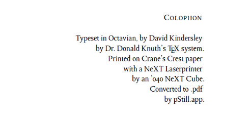

Colophon

Ever since I first saw a page of this kind done by John Saddington (who's also autistic like me), I've made an effort to maintain a similar page of my own, either publicly or privately, because it helps when I'm asked about what tools and hardware I use to get things done. Now that I've settled into home here in Plant City, it's a very different arrangement from what I had living in Tampa.
If you’ve ever looked in an old high school (or college—mine was that small) yearbook, or in a lot of older books, somewhere in the frontmatter or very close to the back there is what’s called a “colophon.” It describes the process by which the book was put together. In the same sense, this is a colophon of how I work.
My interest has been more toward usefulness than necessarily “bells and whistles,” although I do have a few of the latter, too.
My central tool
Believe it or not, the tool that’s become the most central to my day is an almost 45-year-old application called emacs—specifically, emacs org mode.
Over the last few weeks before updating this page I began using it to track my daily work, keep my calendar, and take notes during conference calls and on the fly, and it’s proven indispensable and insanely convenient to have everything in one place. I also use it maintain my finances using ledger-mode.
Even more recently I’ve started getting into Wolfram Mathematica, initially because a free version came with my Raspberry Pi micro-servers (info on those further on), but I’ve been learning to use it as a central tool as well. Even this page was written and posted to WordPress using Mathematica.
Web tools
The blog you’re now reading is hosted on wordpress.com, to keep things simple, using the Hever theme, with no additional frills because it’s currently a free account.
I’m a religious user of Google Apps, Gmail, Google Apps Script, and Google Drive for most of my productivity, email, and personal automation. I also have had a Office Microsoft 365 Personal account practically since it started, but I’ve been moving away from Office with my most recent transition from Windows to Linux on my personal desktop. IFTTT (If This Then That) automates a lot of stuff also (they went pay-to-use).
Most of my notes are kept in, or eventually moved to, Microsoft OneNote.
My social presence includes Facebook (mainly for family and friends), Instagram, Twitter, TikTok (because I need something to laugh at), Twitch, and Discord.
Desktop tools
I recently switched my primary desktop from Windows 10 to Ubuntu Linux, for many reasons, but mainly because I found I could do and automate things a lot more efficiently in Linux than I could on Windows (and it’s far less expensive than buying a Mac). Some of the apps that I use:
Chromium (the open-source project on which Google Chrome is based) for my web browser.
RSS2Email for sending RSS feeds to my GMail inbox.
rclone to connect to my Google Drive, OneDrive, and other endpoints for my files.
LibreOffice, Mathematica, or even plain ol’ (user group link) for writing and presentation work.
Inkscape for making vector (SVG) graphics.
GIMP for making bitmap graphics.
Shotwell for photo organizing.
Visual Studio Code (yes, there’s a Linux package) and emacs for code editing.
GitHub for versioning (and for a time hosting my web presence).
ocrmypdf for digitizing my paper documents once scanned so they can be searched (if they’re not created on one of my tablets already).
Mobile tools & apps
I have a Google Pixel 4 XL Android smartphone running Android 11 (the one with the insanely amazing camera) and a Samsung Galaxy Tab S6 Lite with these tools (for starters) among the usual social networking, shopping, and media junk:
Tasker for automation.
Authy for two-factor authentication, and Microsoft, Google, and Blizzard authenticators for those domains.
JuiceSSH to secure-shell into my desktop machine from on-the-go.
Termux for my very own Debian-based Linux shell (without having to root the phone or tablet).
ESC POS Bluetooth Print Service and a cheap battery-powered Bluetooth thermal receipt printer for printing quick notes or information from my device.
A memobird G2 printer at home for printing notes remotely, either from the app or using the API.
Analog tools/hardware
There are times when I find it easier and more efficient to write things down on paper, especially as I get older and my memory gets less sharp. It’s often a lot quicker to grab a slip of scratch paper close by and scribble it down than to power up a phone or tablet to record it. Eventually, though, everything—even on paper—is made digital and searchable. For that purpose I settled on Norcom’s Exceed notebooks, which are every bit as good as the Moleskines, Leuctturms, and Rhodias of the world for much less money (and they’re easier to find at the local Walmart).
Other weapons in the hardware department:
Desktop Machine, a.k.a. the “Big Rig”: iBuyPower Slate 9000W Gaming PC—Intel® Core™ i7-9700F CPU @ 3.00GHz (8 cores); NVIDIA GeForce GTX 1660 Ti GPU; 16 GB RAM; a total of 6 TB of disk space (a two-terabyte SanDisk Ultra 3D SSD and a four-terabyte Seagate mechancial hard disk); running Ubuntu Linux Desktop 20.04.1. This is my gaming machine and all-around workhorse. I use Lutris as the Windows layer for running Windows apps and games.
The “Mini Me”: Lenovo Yoga Book C930 (not to be confused with the larger Lenovo Yoga C930 laptop). This is the one I like to show off. Closed, it’s just a millimeter or two thicker and an ounce or so heavier than an Apple iPad. Open, it sports an Intel® Core™ i5-7Y54 CPU @ 1.20GHz (turbo boost to 3.20GHz), integrated Intel HD Graphics 615 GPU, 4 GB RAM, 128 SSD storage (plus a microSDXC slot), and an Active Pen for scribbling digitally, along with two 10.8-inch displays—the main one is a 2560×1600 IPS touchscreen, the other is a 1920×1080 e-Ink Mobius® Flexible touchscreen that functions as a “halo” keyboard that learns and adapts to your typing style using neural networking, graphics tablet, writing/note-taking application, ePub/PDF/mobi e-book reader, and a second low-energy display in a pinch. This little machine is amazing. Of course, it runs Windows 10 with Windows Subsystem for Linux running a console version of Ubuntu.
The Chromebook: An Acer Chromebook Spin 11, usually sitting bedside for when inspiration strikes. Came with a Wacom unpowered pen for notetaking (turns out it and the S-Pen on my Samsung tablet are interchangeable; same with the battery-powered active pens on my Envy tablet and Yoga Book).
The servers: I have a pair of Raspberry Pis, a 3B+ and a 4B. Automation/testbed stuff. The Pi 4 is practically a desktop-class machine the size of a deck of playing cards. They also came with Mathematica Raspberry Pi Edition for free, so there’s that.
The tablets: (I don’t use all of these, not at once, anyway):
Samsung Galaxy S6 Lite running Android 10. For when even the Yoga Book isn’t light enough. Has a S-Pen, too.
HP Envy 8 Note (model 5003 with the keyboard folio). It’s become a bit of a testbed.
Dell Venue 8 Pro (basically a paperweight at this point but it still works).
Amazon Kindle Paperwhite 32GB (actually an e-reader rather than tablet but it keeps all my docs in one place)
The peripherals (the major ones, anyway):
Canon PIXMA G4210 “megatank” inkjet all-in-one (almost a year and still haven’t gone through the first batch of ink).
HP LaserJet Pro M118dw (nice and compact for my tiny space). Main reason I keep it is because it supports PostScript, which Linux loves, and it automatically prints double-sided.
Brother DSMobile920DW portable scanner for efficiently capturing all my paper, with or without the computer.
Cricut Maker for … making things.
And the rest of my favorites:
Logitech MX Keys and M720 Triathlon multi-device keyboard and mouse. Worth every damn penny.
ASUS VS278Q-P 27-inch 1920×1080 LCD display (1ms response time FTW)
Rylo 360° camera for vlogging. I'm going to have to replace it soon as the company stopped manufacturing them and got bought by VSCO.
Anker PowerCore Metro power bank.
Apple earPods (wired) with a USB-C adapter for my Pixel laptops (I have a work laptop also provided by my employer).
Google everything (Home Hub, Home mini, everything else works in some way with Google Assistant).
A Fitbit Charge 3 for tracking my personal health metrics (which I can then review in Mathematica and do all kinds of analysis for my doctor and psychiatrist). (There’s also a Huawei Watch 2 Classic but having to charge it every night means I never wear it.)
Did I mention Norcom’s Exceed notebooks and journals?
PaperMate InkJoy pens (smoothest writing instruments I’ve ever owned next to my Zebras).
Zebra F-301 and M-301 ballpoint pens and mechanical pencils.
For carrying stuff:
Wenger SwissGear MAXXUM backpack
LowePro Streamline 150 (officially a camera bag but my Yoga Book/tablet and appurtenances fit perfectly in it).
… and a 2009 smart fortwo 2017 Toyota Yaris L (review page) to get from Point A to Point B (because one doesn’t just walk from Plant City to Tampa or Orlando).
Anything else I may want to check out? Let me know. :-)